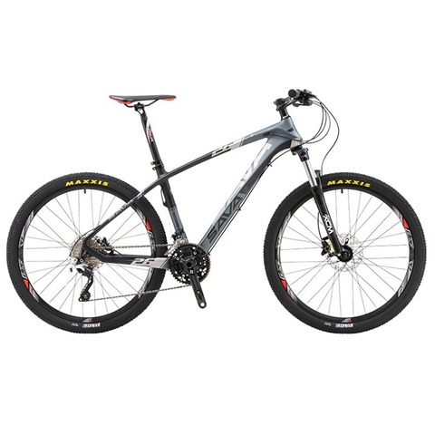
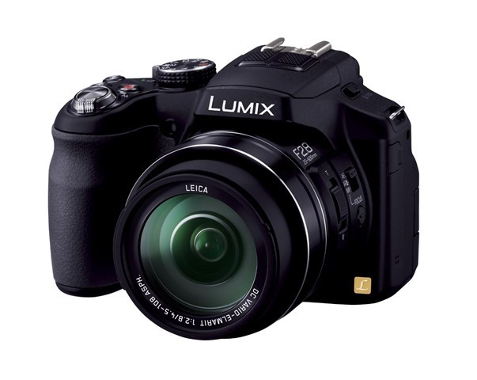
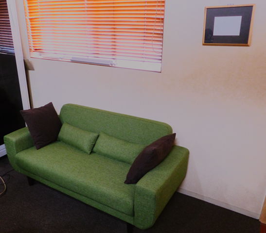
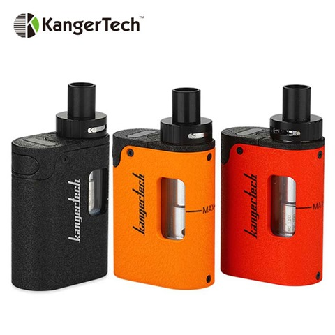

毎年の年末に、今年ぽちったモノの中でよかったなーって思えるベスト１０をやろうと前々から思ってました。
今年から初めてみたいと思います。
10位 コットン製のマフラー 842円
女性ものなんですかね。自転車乗るとき、暖かくて色も紺色で、コットン製なので洗濯も自分で楽です。大判なのでひざ掛けにも使えて安くて大変気に入っています。
９位 髭剃り後や、寝る前に塗るフェイスクリーム 350円

髭剃り負けするので、何かいいクリームないかなーと物色していたのですが、このフェイスクリームは別格でした。寝る前にぬっておくと朝髭剃り負けしません。とても気に入っています。
８位 中華製激安ノートPC YEPO 737A 22746円

年末に購入した中華製のノートPC。コスパは最高です。日常使いの使い倒すノートPCとして活躍するでしょう。１０年前にこんな値段でこの品質のノートPCが出るなんて夢にも思っていませんでした。
７位 カーボンフレームのMTB SAVA26インチ 送料込 60446円

日常の足となっているカーボンフレームのMTB。ついにカーボンに手を出しましたが、軽くてしなやか。とても気に入っています。
６位 冬用の手袋 ROCKBROS S091BK ９００円くらい

手袋は１年に１つづつくらいで、冬用と夏用を使いますが、この手袋はちょっと別格です。また冬用で買うと思います。品質がいいです。
５位 Continental X king MTB 26インチタイヤ 1697円（２本）

コンチネンタルのMTBタイヤです。タイヤって履き替えただけじゃあまり差がないものとばかり思っていましたが、このタイヤは別格でした。とてもいいタイヤで、この値段でまたあったら買いたいなと思います。購入先は、wiggle.jp です。次回もコンチネンタルのタイヤの何かにしようと思っています。
４位 LUMIX DMC-FZ200 23544円

何気にカメラって、新しいものじゃなくても綺麗に撮れるんですよね。かなり満足しています。軽いし、レンズは全域でF2.8だし。しばらｓくこれでいいって思っています。
３位 スミシア 2.5人がけソファー 配送込 19980円

部屋にソファーがあるのとないのとでは雲泥の差ということに気がつきました。とても、ゆったり本読んだり、スマホいじったり、最高です。
２位 Dibea C17 コードレス掃除機 13000円

なんだか、ダイソンに似ていますが、モーターヘッドであり遠心分離式でリチウム充電式のもの。１，２，３階まで一気に掃除できてとても軽く、そしてごみが捨てやすい。コードレスってほんと掃除を楽にしてくれました。
１位 電子タバコ VAPE Kangertech TOGO Mini 2700円ほど

今年の変化のナンバー１は、なんといってもタバコをやめれたことです。このVAPEにニコチン入りリキッドで、いともあっさりほとんど苦痛や苦労もなくさっぱりやめられました。今はたまにVAPEを忘れることがあるんですが、依存度はなくなりつつあります。タバコやめられない人、お勧めです。貯金箱には、たばこを吸ったつもりのお金が貯まっています。半年で７万くらいですかね。体のためにも、ライフスタイルのためにも、すごく意義があったと思います。
以上、2017年度に購入した満足度が高い商品でした。２０１８年度も良い製品と出会えることを楽しみにしています。2018年の４月からは名古屋から東京に生活空間が変わります。お仕事のベースを東京に移動しますので、生活の面でもいろいろと楽しみが増えそうです。特にイベントがらみは気軽に行けそうで、交友も広げていければなと思います。